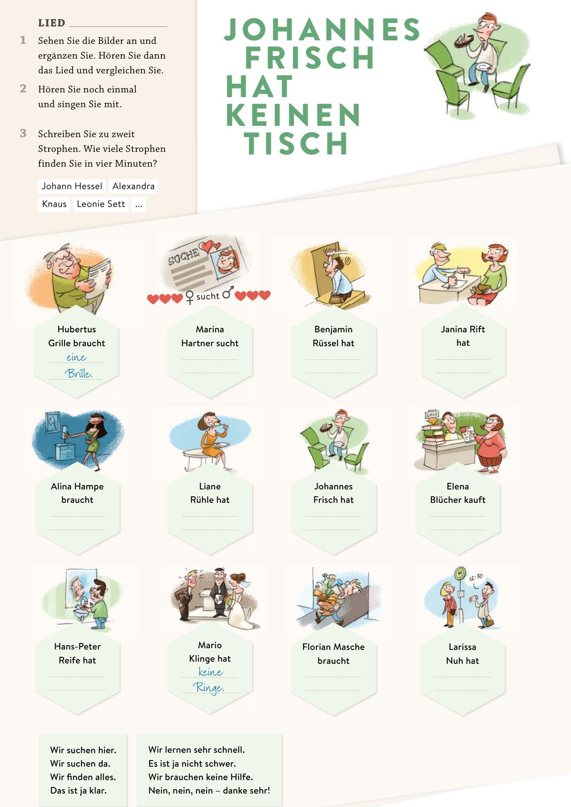

So geht's
Cinco pasos
- Mira los dibujosCada persona tiene, busca o necesita algo. Frisch rima con Tisch.
- EscuchaUna o dos veces, sin escribir. Solo oye qué artículo va.
- Escribeeinen · eine · keinen · keine + la cosa, en el orden en que suenan.
- CorrigeLo que salga en rojo, escúchalo otra vez antes de ver la solución.
- Inventa tu estrofaUn nombre y una cosa que rimen. Tráela a la clase del miércoles.

Übung · Hören und schreiben
Wer hat was (nicht)?
- 0Hubertus Grille braucht eine Brille
- 1Marina Hartner sucht
- 2Benjamin Rüssel hat
- 3Janina Rift hat
- 4Alina Hampe braucht
- 5Liane Rühle hat
- 6Johannes Frisch hat
- 7Elena Blücher kauft
- 8Hans-Peter Reife hat
- 9Mario Klinge hat
- 10Florian Masche braucht
- 11Larissa Nuh hat
Ojo con el 3: en las soluciones del libro dice einen Stift, pero en la canción se oye keinen Stift. Vale lo que se oye.
La regla
Solo cambia el masculino
| Nominativ | Akkusativ | |
|---|---|---|
| der Tisch | ein · kein | einen · keinen |
| die Lampe | eine · keine | eine · keine |
| das Bett | ein · kein | ein · kein |
| die Stühle | – · keine | – · keine |
haben, brauchen, suchen, kaufen piden Akkusativ. Por eso Johannes tiene keinen Tisch y no kein Tisch.
Der Refrain · para cantarlo
Wir suchen hier. Wir suchen da.
Wir finden alles. Das ist ja klar.
Wir lernen sehr schnell. Es ist ja nicht schwer.
Wir brauchen keine Hilfe. Nein, nein, nein – danke sehr!
Deine Strophe
Ahora tú
Inventa una persona cuyo apellido rime con una cosa. Por ejemplo: Lena Kasse braucht eine Tasse.